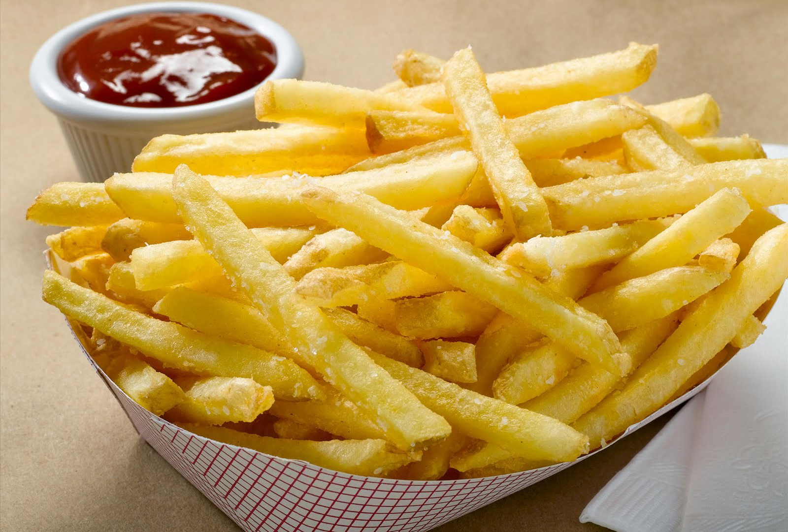

PAPAS FRITAS
Recetas de papas fritas caseras

Ingredientes
3 o 4 papas (300 grs)
aceite
sal
Elaboracion (pasos)
pelar las papas
cortarlas en baston
calentar el aceite
freir hasta que esten doradas
retirar el exceso de aceite y sal algusto